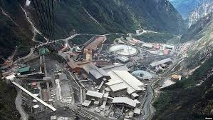
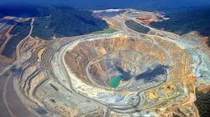
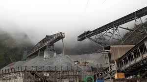
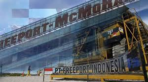

SELAMAT DATANG PT FREEPORT INDONESIA
Home-
Profil-
Image-
tabel-
ContactUs
Gambar perusahaan dan lokasi pertambangan




PT Freeport Indonesia (PTFI) adalah perusahaan pertambangan mineral yang beroperasi di Papua, Indonesia.
PTFI menambang dan memproses bijih yang mengandung tembaga, emas, dan perak.
Mereka memiliki tambang di Grasberg, yang merupakan salah satu deposit tembaga dan emas terbesar di dunia.
Pemerintah Indonesia memiliki saham mayoritas di PTFI melalui MIND ID dan PT Indonesia Asahan Aluminium (Persero),
sedangkan saham minoritas dimiliki oleh Freeport-McMoRan asal Amerika Serikat
Sejarah PT Freeport Indonesia
- Expedisi Pertama :
1936 - Ekspedisi Cartenz, oleh A. H. Colijn, F. J. Wissel dan geolog Jean-Jacques Dozy,
merupakan kelompok luar pertama yang mencapai gunung gletser.
Jayawijaya dan menemukan Ertsberg
- 1960 - 1969 :
1963 - Ekspedisi Freeport,oleh Forbes Wilson & Del Flint untuk menemukan kembali Ertsberg.
1967 - Penandatangan Kontrak Karya (KK) 1 yang merupakan salah satu pionir PMA pertama untuk jangka waktu 30 tahun setelah beroperasi.
- 1970 - 1979 :
1972 - Memulai produksi penambangan dan pengolahan bijih. Pengapalan konsentrat dilakukan pada tahun berikutnya.
- 1980 - 1989 :
1988 - Penemuan cadangan Grasberg.
- 1990 - 1999 :
1991 - Penandatanganan Kontrak Karya (KK) II, yang merupakan pembaharuan KK I,
untuk jangka waktu 30 tahun dengan hak perpanjangan s.d. 2 x 10 tahun.
1995 - Penyelesaian pembangunan kota Kuala Kencana di dataran rendah,
suatu fasilitas dan sarana prasarana pendukung operasi produksi penambangan.
1996 - Memulai dana kemitraan 1% dari penjualan perusahaan bagi pengembangan masyarakat lokal yang dikelola institusi masyarakat,
tambahan dari program CSR yang dilakukan langsung oleh perusahaan. 1997 - Penyelesaian dan pengoperasian PT Smelting di Gresik Jawa Timur,
fasilitas pemurnian yang menghasilkan Katoda Tembaga pertama di Indonesia. Rata-rata 40% produksi konsentrat perusahaan dimurnikan di smelter ini.
- 2000 - 2009 :
2004 - Memulai investasi proyek pengembangan bawah tanah sebagai kelanjutan dari tambang terbuka Grasberg yang berakhir di tahun 2018,
$9 miliar telah diinvestasikan dan tambahan $20 miliar akan diinvestasikan sampai dengan 2041
- 2010 - 2019 :
2018 - Penandatanganan Ijin Usaha Pertambangan Khusus ( IUPK) yang merupakan perubahan bentuk dan
perpanjangan usaha pertambangan sampai dengan 2041. 51,24% saham perusahaan dimiliki oleh pihak nasional Indonesia.
Memulai pembangunan tambahan fasilitas pemurnian tembaga dan fasilitas pemurnian logam berharga.
Copy Right
2025
Admin by:PT FREEPORT INDONESIA